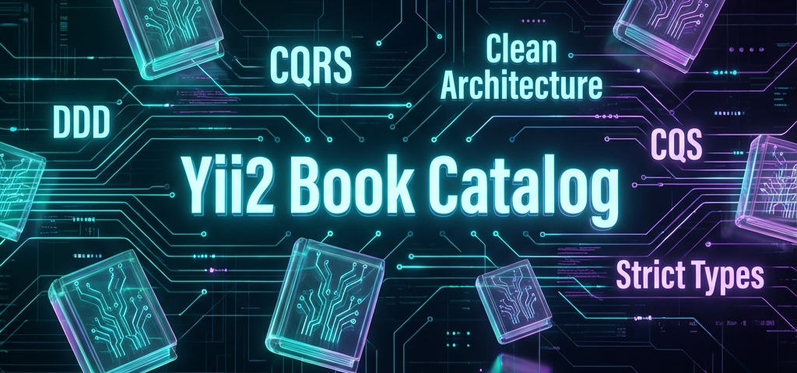

Чистая архитектура на Yii2
Showcase-проект на PHP 8.5 и Yii 2: Clean Architecture, DDD, CQS, HTMX, 100% Code Coverage и 100% Infection MSI.

Ключевые особенности
Clean Architecture
Полное разделение бизнес-логики и фреймворка: изоляция через Use Cases и порты.
Rich Domain Model
Entities с поведением, invariant guards и приватными конструкторами: create(), reconstitute().
CQS Pattern
Чёткое разделение команд и запросов: Use Cases не возвращают данных, Query Services не мутируют состояние.
Domain Events + Fan-out
Асинхронное взаимодействие через события и очереди: паттерн Fan-Out для масштабируемых уведомлений.
Idempotency + Mutex
Защита от повторных запросов и гонок на уровне Middleware: безопасные операции без дублей.
Гибридный поиск
Полнотекстовый поиск с автоматическим откатом к LIKE для надежности.
HTMX UI
Бесконечный скролл и реактивный интерфейс на декларативных атрибутах — минимум кастомного JS.
Status FSM
Конечный автомат статусов книги: draft → published → archived с контролем переходов и бизнес-правилами.
CAS Storage
Контентно-адресуемое хранилище файлов: дедупликация и целостность по SHA-256 хешу.
Value Objects
Строгая типизация домена: Isbn, BookYear, BookStatus, StoredFileReference.
Observability
Распределенная трассировка через OpenTelemetry + Jaeger: waterfall timeline и поиск по тегам.
Health Check
Production-ready эндпоинт /health: мониторинг состояния сервисов и готовности к работе.
Слой за слоем
Осознанные компромиссы
Integer ID > UUID
UUID решает проблему распределённых систем — здесь монолит с одной БД. ID инкапсулирован в Value Object: замена на UUID затронет только инфраструктурный слой.
No Outbox
Transactional Outbox гарантирует доставку событий при сбоях между коммитом и отправкой. afterCommit покрывает 99.9% случаев — Outbox добавим когда появится реальный брокер сообщений.
ActiveRecord
AR используется как Data Mapper в инфраструктурном слое — удобный синтаксис запросов без утечки persistence-логики в домен.
Grouped Handlers
Обработчики событий сгруппированы по агрегату: один класс = один контекст. Это снижает количество файлов без потери cohesion.
Reflection ID
PHP Reflection устанавливает ID после persist — домен не знает о генерации ключей и не нуждается в публичном setId().
Smart Validation
Валидация распределена по слоям: VO guards в домене, уникальность через порты в Use Cases, формы только для HTTP-ввода.
Технологический стек
Бескомпромиссное качество
Мы не просто пишем тесты - мы проверяем их качество с помощью Mutation Testing (Infection). Если мутант выживает - мы меняем тест или код. Это гарантирует, что каждый ассерт имеет значение.
- Unit Tests: тестирование домена в полной изоляции.
- Integration Tests: проверка работы с реальными БД и очередями.
- E2E Tests: симуляция действий пользователя в браузере.